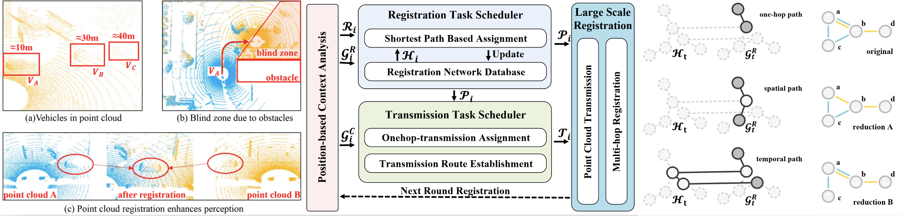
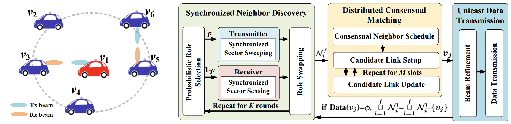
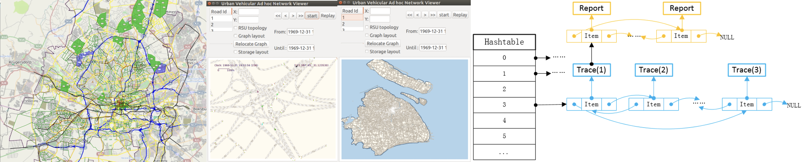

Yunxiang Cai (蔡云翔)
 |
Algorithm Engineer
ADN Research Department
Huawei Technologies Shanghai R&D Center cyx0229ATfoxmail.com, caiyunxiangATsjtu.edu.cn |
Biography. I am currently working as an algorithm engineer at Huawei Technologies Co., Ltd, focusing on autonomous driving networks, particularly in the areas of digital twins and AI-empowered networks. I received my Ph.D. degree from the Department of Computer Science and Engineering at Shanghai Jiao Tong University (SJTU) in September 2023, under the supervision of Prof. Hongzi Zhu. During my Ph.D. studies, I conducted research in Laboratory of Innovation of Networking (LION), focusing on topics related to vehicular networks, mobile computing, mobile sensing, and AIoT. Prior to that, I received my B.S. in Physics from Ocean University of China (OUC) in June 2018, where I was advised by Prof. Yongjian Gu. During my undergraduate studies, I mainly focused on quantum information, especially in the area of underwater quantum key distribution.
[Education] [Research Interest] [Research Projects] [Publications] [Patents] [Awards and Honors] [Voluntary Service] [Teaching Assistance]
-
2023.12 - I join Huawei Technologies Co., Ltd as an algorithm engineer.
-
2023.12 - Our paper LoRaPCR has been accepted to appear in IEEE INFOCOM 2024.
-
2023.08 - I have successfully passed my thesis defense and received my Ph. D. degree! Thesis: Research on Context-aware Broadcasting Protocol Design and Optimization in VANETs
-
2022.11 - I am Awarded the Graduate Excellent Scholarship.
-
2022.04 - Our paper mmV2V has been accepted to appear in IEEE ICDCS 2022.
-
2022.02 - Our patent (202110197393.X) has been authorized by CNIPA.
-
2022.01 - Our paper PeerProbe has been accepted to appear in IEEE/ACM Transactions on Networking (TON).
Education
-
Sep. 2018 - Sep. 2023: Ph.D. in Computer Science, Shanghai Jiao Tong University
-
Sep. 2014 - Jun. 2018: B.S. in Physics, Ocean University of China
Research Interest
-
Vehicular networks.
-
Mobile computing.
-
AI-empowered IoTs.
-
Digital Twins.
Research Projects
-
[PeerProbe] Neighbor Distribution Estimation in Vehicular Networks. (Finished)
Acquiring the geographical distribution of neighbors can support more adaptive media access control (MAC) protocols and other safety applications in Vehicular ad hoc network (VANETs). However, it is very challenging for each vehicle to estimate its own neighbor distribution in a fully distributed setting. In this project, we propose an online distributed neighbor distribution estimation scheme, called PeerProbe, in which vehicles collaborate with each other to probe their own neighborhood via simultaneous symbol-level wireless communication. An adaptive compressive sensing algorithm is developed to recover a neighbor distribution based on a small number of random probes with non-negligible noise. Moreover, the needed number of probes adapts to the sparseness of the distribution. We further conduct extensive simulations with VENUS simulator and the results demonstrate that PeerProbe is lightweight and can accurately recover highly dynamic neighbor distributions in critical channel conditions. This work is presented in IEEE INFOCOM 2021 (Distributed Neighbor Distribution Estimation with Adaptive Compressive Sensing in VANETs).
Then we modify the proposed method to be more robust and implement a prototype system with four USRP N210 to verify the feasibility of PeerProbe in various typical vehicular channel conditions. Besides, we show two typical use cases to show the potential of the proposed method. This work is accepted to appear in IEEE/ACM TON (PeerProbe: Estimating Vehicular Neighbor Distribution With Adaptive Compressive Sensing). Moreover, one patent of the scheme has been authorized.

Collaborators: Prof. Hongzi Zhu, Prof. Shan Chang, Xiao Wang, Jiangang Shen, Prof. Minyi Guo
My contribution: algorithm and system design, simulation, prototype establishment.
Skills: 802.11 protocol simulation (MATLAB & C), prototype with GNU radio (C++ & Python) and USRP.
-
[DeepAoA] Online Vehicular Direction Finding based on a Deep Learning Method. (Finished)
Relative direction estimation among neighboring vehicles in an urban environment is essential to a wide variety of driving safety applications. To obtain accurate direction information solely from vehicle-to-vehicle (V2V) communications is desirable but very challenging due to the highly dynamic vehicular environments. In this project, we first propose an online vehicular AoA estimation scheme, called DeepAoA, based on a deep learning method. More specifically, Channel state information (CSI) is estimated from a set of synchronized receiving radios by a receiver vehicle. By taking the CSI phase difference between a pair of such radios, CSI phase errors in baseband can be effectively eliminated, which makes CSI phase difference a compelling feature to represent the direction of incident radio frequency (RF) signals and the dynamic channel characteristics. A convolutional neural network (CNN) model is then trained with labeled samples of CSI phase difference. We implement a prototype of DeepAoA receiver using four synchronized USRPs with their antennas in uniform circular array (UCA) configuration for a full field of view. We collect real-world CSI traces and conduct trace-driven simulations. DeepAoA can achieve AoA estimation errors of less than 3◦ with a 98% confidence interval with four antennas. The results demonstrate the efficacy of DeepAoA in the static scenario. This work is presented in IEEE ICPADS (DeepAoA: Online Vehicular Direction Finding Based on a Deep Learning Method).
After the work of DeepAOA, we find a more fundamental problem in implementation of mobile AI, the domain adaption problem. The trained model cannot deal with dynamic environments. We try to collect a real-world dataset in the dynamic driving scenario and use generative models to conquer the dynamic domain adaption problem. This work is under review.

Collaborators: Yifeng Zhu, Facheng Hu, Prof. Hongzi Zhu, Yizhen Yao, Prof. Shan Chang, Prof. Xudong Wang, Prof. Minyi Guo, Prof. Bo Li
My contribution: algorithm and system design (mainly for ground truth acquirement), prototype establishment, dataset collection.
Skills: Generative Models,i.e. VAE & GAN (Python), Object tracking with Lidar (Python), 802.11 protocol simulation (MATLAB & C), prototype with GNU radio (C++ & Python) and USRP.
-
[LoRaPCR] Long Range Point Cloud Registration Through Multi-Hop Relays. (Finished)
Point cloud registration (PCR) can significantly extend the visual field and enhance the point density on distant objects, thereby improving driving safety. However, it is very challenging for vehicles to perform online registration between long-range point clouds. In this paper, we propose an online long-range PCR scheme in VANETs, called LoRaPCR, where vehicles achieve long-range registration through multi-hop short-range highly-accurate registrations. Given the NP-hardness of the problem, a heuristic algorithm is developed to determine best registration paths while leveraging the reuse of registration results to reduce computation costs. Moreover, we utilize an optimized dynamic programming algorithm to determine the transmission routes while minimizing the communication overhead. Results of extensive simulations demonstrate that LoRaPCR can achieve high PCR accuracy with low relative translation and rotation errors of 0.55 meters and 1.43◦, respectively, at a distance of over 100 meters, and reduce the computation overhead by more than 50% compared to the state-of-the-art method.
 Collaborators: Zhenxi Wang, Prof. Hongzi Zhu, Quan Liu, Prof. Shan Chang, and Liang Zhang
My contribution: Algorithm Design.
Skills: Point Cloud Registration.
-
[mmV2V] One-Hop Multicasting In Millimeter-Wave Vehicular Networks. (Finished)
One-hop multicasting (OHM) of high-volume sensor data is essential for cooperative autonomous driving applications. While millimeter-Wave (mmWave) bands can be utilized for high-bandwidth OHM data transmission, it is very challenging for individual vehicles to find and communicate with a proper neighbor in a fully distributed and highly dynamic scenario. In this paper, we propose a fully distributed OHM scheme in vehicular networks, called mmV2V, which consists of three highly integrated protocols. Specifically, synchronized vehicles first conduct a probabilistic neighbor discovery procedure, in which randomly divided transmitters (or receivers) clockwise scan (or listen to) the surroundings in pace with heterogeneous Tx (or Rx) beams. In this way, the vast majority of neighbors can be identified in a few repeated rounds. Furthermore, vehicles negotiate with each of their neighbors about the optimal communication schedule in evenly distributed slots. Finally, each agreed pair of neighboring vehicles start high data rate transmissions with refined beams. We conduct extensive simulations and the results demonstrate that mmV2V can achieve a high completion ratio in rigid OHM tasks under various traffic conditions.
 Collaborators: Jiangang Shen, Prof. Hongzi Zhu, Dr. Bangzhao Zhai, Prof. Xudong Wang, Prof. Shan Chang, Prof. Haibin Cai, Prof. Minyi Guo
My contribution: Algorithm Design.
Skills: mmWave, beamforming.
-
[VENUS] VEhicular Network Universal Simulator. (Finished)
With the increasing traffic pressure in cities, the study of micro-traffic simulation technology and its application in urban traffic planning is of significant importance. Foreign research in micro-traffic simulation technology has been conducted for many years, achieving substantial results in theoretical foundations and technical implementations. However, domestic research in this area has started later and urgently needs more in-depth studies. This project, focusing on micro-traffic simulation engine technology, investigates the theoretical foundations of static topological maps, vehicle following models, and traffic flow generation. Innovatively, it proposes the concept of dynamic road blockage. Following the completion of theoretical research and design, the development of programs for the aforementioned functions is finished, realizing a large-scale micro-traffic simulation system. The system is developed in C language, with the GUI program using the GTK+ library. It also implements multi-threaded parallel computing, speeding up the process by about 40% compared to traditional methods. Capable of effectively supporting simulations with over 100,000 vehicles, it allows interactive operations during the simulation, such as dynamically adding barriers to study the impact of sudden road events on traffic. (code)
 Collaborators: Prof. Hongzi Zhu, Jiangang Shen, Yasheng Wang
My contribution: Software Development & Maintenance.
Skills: Trace Driven Simulation (C/C++).
-
[LiCode] Smart Traffic Sign for Multimodal Autopilot. (Ongoing)
To be detailed.
Collaborators: Ziliang Guo, Prof. Hongzi Zhu
My contribution: System Design and Implementation.
Skills: Object Detection and Classification with Lidar and Camera.
-
[BubbleMAC] Flexible Media Access Control Protocol (MAC) Design in IoVs. (Finished)
To be detailed.
Collaborators: Prof. Hongzi Zhu, Facheng Hu, Prof. Shan Chang, Jiangang Shen, Yunzhe Li, Prof. Minyi Guo
My contribution: Protocol Design, Prototype Implementation.
Skills: MAC Design, SDR, Trace Driven Simulation (C)
-
[U-QKD] Circuit Design for Underwater Quantum Key Distribution. (10/2015 - 6/2017, Finished)
This is a National Undergraduate Electronic Design Competition project. I am the leader of this project. Quantum key distribution (QKD) is a secure communication method which implements a cryptographic protocol involving components of quantum mechanics. It enables two parties to produce a shared random secret key known only to them, which can then be used to encrypt and decrypt messages. In this project, we mainly focus on the circuit design of the system. We design a circuit to control the lassers and implement a prototype running under BB84 protocol.

Collaborators: Prof. Yongjian Gu, Prof. Wendong Li, Zhaoxiang Wang, Qiyuan Cheng, Yetong Zhou, Yunzhou Ju
My contribution: Circuit Design, Prototype Implementation.
Skills: basic knowledge about circuit design (Altium Designer) and FPGA programming (Verilog).
Publications
Published Papers:
-
Zhenxi Wang, Hongzi Zhu, Yunxiang Cai, Quan Liu, Shan Chang and Liang Zhag, LoRaPCR: Long Range Point Cloud Registration through Multi-hop Relays in VANETs,
to appear in Proceedings of IEEE INFOCOM 2024. (CCF-A) -
Yunxiang Cai, Hongzi Zhu, Shan Chang, Xiao Wang, Jiangang Shen, Minyi Guo, PeerProbe: Estimating Vehicular Neighbor Distribution With Adaptive Compressive Sensing,
IEEE/ACM Transactions on Networking (TON), 30(4), pp. 1703-1716, 2022. (CCF-A) [pdf] -
Jiangang Shen, Hongzi Zhu, Yunxiang Cai, Bangzhao Zhai, Xudong Wang, Shan Chang, Haibin Cai and Minyi Guo, mmV2V: Combating One-hop Multicasting in Millimeter-wave Vehicular Networks, in Proceedings of IEEE ICDCS 2022.(CCF-B)[pdf]
-
Yunxiang Cai, Hongzi Zhu, Xiao Wang, Shan Chang, Jiangang Shen, Minyi Guo, Distributed Neighbor Distribution Estimation with Adaptive Compressive Sensing in VANETs,
in Proceedings of IEEE INFOCOM, Online Virtual Congress, May 10-13, 2021. (CCF-A)[pdf][video] -
Yifeng Zhu, Yunxiang Cai, Hongzi Zhu, Shan Chang, DeepAoA: Online Vehicular Direction Finding Based on a Deep Learning Method,
in Proceedings of IEEE ICPADS, Tianjin, China, December 4-6, 2019. (CCF-C)
Working Papers:
-
Yunxiang Cai , Facheng Hu, Hongzi Zhu, Shan Chang and Minyi Guo. BubbleMAC: Taming Reliable Broadcasting with Driving Safety Oriented Power Control in VANETs. In submission.
-
Facheng Hu,Yunxiang Cai（co-first authors）, Hongzi Zhu, Shan Chang, Xudong Wang, Minyi Guo and Bo Li. DeepAoA+: Online Cross-domain Vehicular Relative Direction Estimation via Deep Learning. In submission.
-
Jiangang Shen, Hongzi Zhu, Yunxiang Cai, Bangzhao Zhai, Xudong Wang, Shan Chang, Haibin Cai and Minyi Guo. Combating One-hop Multicasting in Millimeter-wave Vehicular Networks. In submission.
Patents
Granted Patents:
-
First student author, A Distributed Neighbor Node Distribution Estimation Method based on Adaptive Compressed Sensing, 202110197393.X. (Granted on 2/21/2022)
Applying Patents:
-
First student author, A Vehicle Relative Position Estimation Method Based on Domain Partition and Model Selection, 202310869955.X
-
First student author, A Reliable and Flexible Media Access Control Method for Road Safety, 202311378473.0
Awards and Honors
-
Excellent Graduate Scholarship, 2022
-
Huawei Scholarship, 2021
-
First Prize, C4-Network Technology Challenge, 2021
-
IEEE INFOCOM Traval Grant, 2021
-
Best Service Award of LION, 2020, 2021
-
Best Performance Award of LION, 2020
-
Outstanding Teaching Assistant of SJTU, 2019, 2020
-
Outstanding Undergraduate Thesis of OUC, 2018
-
Outstanding Graduates of Shandong province (Top 2% in department), 2018
-
Outstanding Project, National College Student Innovation and Entrepreneurship Training Program, 2017
-
First Prize, National Undergraduate Electronic Design Competition, 2016
-
First Prize, Undergraduate Mathematics Competition of Shandong Province, 2015
-
Class A Scholarship in Ocean University of China (Thrice, Top 5% in department), 2017, 2016, and 2015
Voluntary Service
-
Monitor of Computer Science Ph.D Student, 9/2018-9/2023.
-
CPC Party Branch Secretary of Computer Science Ph.D. Student, 9/2019-3/2021.
-
Reviewer: Internet of Things Journal (IOTJ), Transactions on Vehicular Technology (IEEE TVT), Peer-to-Peer Networking and Applications (PPNA).
-
Academic Volunteer: ACM Turing Award Celebration Conference China (ACM TURC), 2018, 2019.
-
Maintainer of LION Servers.
Teaching Assistance
-
Programming Methodology(C++) at Shanghai Jiao Tong University - spring, 2018-2021, Tutor: Prof. Hongzi Zhu
-
Data Structure and Algorithm Analysis at Shanghai Jiao Tong University - spring, 2020, Tutor: Prof. Hongzi Zhu
-
Computer Architecture and Principles at Shanghai Jiao Tong University - spring, 2020, Tutor: Prof. Hongzi Zhu